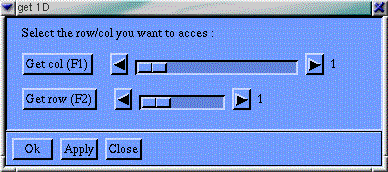
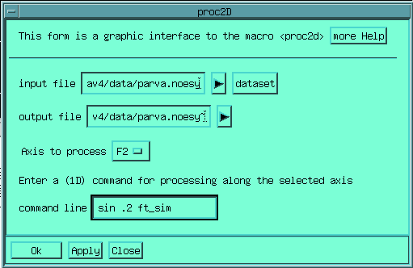

These menus permit to perform most of the regular processing to be performed on simple NMR spectra.
This menu contains all the operation which are to be applied before the Fourier transform step and is common to all processing modules (1D,2D and 3D), since the apodisation step is the same in all cases. It is installed with the env_proc1d.g macro, along with the Proc 1D menu.
Em...
Apply an exponential apodisation to the current data-set. The value of the exponential is in Hertz. There is one parameter for each axis in the data-set (1 in 1D, 2 in 2D, 3 in 3D). Equivalent to the EM command.
Gm...
Apply an Gaussian apodisation to the current data-set. The value of the Gaussian is in Hertz. There is one parameter for each axis in the data-set (1 in 1D, 2 in 2D, 3 in 3D). Equivalent to the GM command.
Sin...
Apply a sine-bell apodisation to the current data-set. The first
(and only in 1D) parameter is a value ranging from 0.0 to 0.5; the
value of the parameter corresponds to the position of the maximum of
the filter in your window, thus 0.0 is pure cosine, 0.5 is pure sine,
all intermediate values are possible. In 2D or 3D you will be
prompted for the axis on which the apodisation should be
applied.
Equivalent to the SIN command.
SqSin...
As the Sin button but applies a squared sine-bell. Equivalent to the SQSIN command.
Tm...
Applies a trapezoidal apodisation. You will be prompted for two parameters, the built function starts from 0.0, raises up to the index entered as the first parameters where it reaches 1.0, the decay from 1.0 to 0.0 starts a the index entered as the second parameter up to the end of the data-set. In 2D or 3D you will be prompted for the axis on which the apodisation should be applied. Equivalent to the TM command.
Gaussian Interactive
Permits to interactively use a Gaussian resolution enhancement, by combining a Gaussian apodisation and an exponential one. Equivalent to the gm_inter macro.
User defined...
Applies an apodisation which can be defined as an equation by the user. Equivalent to the user_apod macro.
Correct 1st point
Correct the first point of the current data set for the quantification bias introduced by the sampling. This is typical correction on 2D-3D data-sets. It partially removes the t1-ridges that are commonly seen. It has less interest in 1D.
ChSize...
Permits to change the size of the current data-set. The operation
(reduction or increase) will be realised at once on the data-set.
Increasing the size will be realised by adding zeros at the end of
the buffer. You will be prompted for a dimension per axis in the
data-set.
Equivalent to the CHSIZE
command.
This menu, installed with the env_proc1d.g macro, holds the commands for 1D processing.
Easy1d
This command opens a form permitting to rapidely process a 1D experiment.You select the size, the apodisation function, the Fourier, phasing and Baseline correction steps. The set-up can be used for direct computation as well as to store a macro that will realise the process in a latter stage. See the details in the chapter Basic (1D) Processing Check also the on-line help
ZeroFill
Extend the size of the current data-set to a size equal to the next power of two. This is realised with the CHSIZE command.
ft_Seq
Realises the Fourier transform suitable for a data set acquired in sequential mode : real and imaginary part alternatively sampled. Equivalent to the ft_seq macro or to the REVF RFT command.
ft_Sim
Realises the Fourier transform suitable for a data set acquired in simultaneous mode : real and imaginary part sampled at the same time point, and stored alternatively in the buffer. Equivalent to the ft_sim macro or to the REVF FT command.
Ph
 Starts
the PH command which permits to
interactively phase the current spectrum. Pops up a control graphic
box, which permits to control zeroth and first order phase
corrections, place the pivot (with the middle button of the mouse),
and store the phase correction. Zoom and the Zoom Box controls are
still active.
Starts
the PH command which permits to
interactively phase the current spectrum. Pops up a control graphic
box, which permits to control zeroth and first order phase
corrections, place the pivot (with the middle button of the mouse),
and store the phase correction. Zoom and the Zoom Box controls are
still active.
Auto. Phasing
Computes a phase correction on the current 1D data-set, using the APSL techniques (A.Heuer J.Magn.Reson. 91 p241 (1991) ). This is equivalent to calling the apsl macro.
Redo Phase
Apply to the data-set the last phase correction used. Equivalent to the PHASE %% command.
Real
Remove the imaginary part of the data-set, thus reducing by two the number of buffer points. Equivalent to the REAL command.
Modulus
Compute the modulus of the spectrum from the real and imaginary parts. Equivalent to the MODULUS command.
Integrate
Start the 1D graphic integration module.
See Basic (1D) Processing for details.
This menu, installed with the env_proc2d.g macro, holds the commands for 2D processing. The F1 axis always refers to the non-classical, vertical axis of the 2D, and the F2 axis to the classical, horizontal axis. Some commands are specific to F1 or F2 processing, some commands prompt for the axis to process, in which case you have to enter either F1, F2 or F12 if you want a processing on both axes.
Easy 2D
This button launches a form which simplifies the Fourier transform process. You select the sizes, the apodisation functions, the Fourier, phasing and Baseline correction steps. The set-up can be used for direct computation as well as to store a macro that will realise the process in a latter stage. See the details in the chapter Handling of 2D and 3D Data-sets Check also the on-line help.
ZeroFill F1 - ZeroFill F2
Increases the size of the dataset in the F1 or F2 domain up to the next power of 2. performed with the CHSIZE command
Burg 2D
This button permits to use the burg Linear prediction method for extending the data-set. You can see it like a sophisticated zero-filling function. Equivalent to the burg2d macro.
Svd 2D
This button permits to use the Linear prediction method for extending the data-set. The LP method used here is based on the computation of a singular value decomposition (SVD) from each row of the data-set. It is more sophisticated, but much slower than the Burg method.
ft_Seq (F2)
Realises the Fourier transform in F2 suitable for a data set acquired in sequential mode : real and imaginary part alternatively sampled. Equivalent to the ft_seq macro or to the REVF F2 RFT F2 command.
ft_Sim (F2)
Realises the Fourier transform in F2 suitable for a data set acquired in simultaneous mode : real and imaginary part sampled same time point, and stored alternatively in the buffer. Equivalent to the ft_sim macro or to the REVF F2 FT F2 command.
ft_phase_modu (F1)
Realises the Fourier transform in F1 suitable for a data set acquired in phase modulation mode. Equivalent to the ft_phase_modu macro or to the FLIP REVF F1 FT F1 FLOP command.
ft_tppi (F1)
Realises the Fourier transform in F1 suitable for a data set acquired in TPPI mode. Equivalent to the ft_tppi macro or to the RFT F1 command.
ft_sh (F1)
Realises the Fourier transform in F1 suitable for a data set acquired in Hypercomplex (States-Haberkorn) mode. Equivalent to the ft_sh macro or to the REVF F1 FT F1 command.
ft_sh_tppi (F1)
Realises the Fourier transform in F1 suitable for a data set acquired in TPPI Hypercomplex (TPPI States-Haberkorn) mode. Equivalent to the ft_sh_tppi macro or to the FT F1 command.
ft_n+p (F1)
Realises the Fourier transform in F1 suitable for a data set acquired in echo-antiecho mode, with alternated gradients. Equivalent to the ft_n+p macro.
Ph in f1 (ph2dc)
Starts the macro ph2dc which permits to interactively phase a 2D spectrum in F1. You first enter a selection mode, where you click on the 2D window with the left button to visualise the columns, you select them with the middle button, the selected columns are added together. You exit this mode with the right button. You then enter the PH command with a composite 1D spectrum obtained from the selected columns. The phase obtained on this spectrum is then applied on the complete 2D.
Ph in f2 (ph2dr)
Equivalent to ph2dc for the F2 domain.
Redo Phase F1
Apply again the last phase correction in the F1 domain. Equivalent to the PHASE % % F1 command
Redo Phase F2
Apply again the last phase correction in the F2 domain. Equivalent to the PHASE % % F2 command
Real F12
Remove the imaginary parts of the data-set along each axis, thus reducing the total size of the data-set by four. Equivalent to the REAL F12 command.
Modulus
Computes the modulus spectrum from the real and imaginary parts. Equivalent to the MODULUS command.
Proj F1
Computes the projection of the 2D dataset along the F1 axis, onto the F2 axis. The command will prompt you whether you want a "Skyline" (keep the highest points) or a "Mean" (sum all points) projection. Equivalent to the PROJ F1 command.
Proj F2
Computes the projection of the 2D dataset along the F2 axis, onto the F1 axis. The command will prompt you whether you want a "Skyline" (keep the highest points) or a "Mean" (sum all points) projection. Equivalent to the PROJ F2 command.
Proj_loc
Computes a local projection of the 2D dataset along any chosen axis, the projection is computed from only a part of the data-set, by default you are prompted for the current zoom window.
...2D on file
This menu entry adds an additionnal menu called '2D on file' which ease the
process of processing very large 2D, working on file rather than in memory.
With this set-up there is no limit on the size of the 2D that can be processed.
see Working On File rather than In Memory for
details.
The equivalent
command is : env_2donfile.g
When a data-set is too big to be processed in-memory, it is possible to realize
the processing on-file. This is done with a special set-up in Gifa, the "cache"
system, which permits to access files in an optimal fashion, (see below the
Working On File rather than In Memory chapter).
This mode is rather
designed for 3D processing, however it is perfectly possible to
handle 2D in this way. 2D processing on file is done by having an
input file and an output file, planes are loaded from the input file,
processed in memory as regular 1D experiment, and then copied on the
output file.
Join data-set...
This entry permits to realize the first operation to be done, namely connecting to the input file. This is equivalent to the JOIN command. Once a data-set has been JOINed, it is possible to display internal parameters, load 1D from it, or load a 2D region form it. Note that you can issue that command to several files, thus being JOINed to more than one file. However all the command will refer to the last JOINed file.
Dataset parameters
That button simply runs the dataset macro, which displays all the spectral parameters of the current JOINed data-set. Note that since the header holding all the parameters is in ASCII format, one can simply make more filename to see the value of all the parameters.
list all files
This button lists the names of all the files which are currently JOINed.
disjoin
Once a file have been JOINed it must be DISJOINed in order to release completely the internal memory.
get 1D
This menu entry permits to load a 1D plane extracted from the currently JOINed 2D dataset. A graphic box is displayed :
Which
permits to rapidely select row and columns from the experiment.
For
instance it can useful to load the first F1 or F2 Fid to determines
the optimum processing parameters, and phases, before going to full
2D processing. It is equivalent to using the GETC
command in DIM 1 mode.
get region
This ones permits to load in the central memory a portion of the currently JOINed data-set. You will be prompted for the coordinates fits point (F1, F2) and then for the coordinates of the last point (F1, F2). It is equivalent to using the GETC command in DIM 2 mode.
2D proc...
This button creates a form which permits to process the 2D data-set on-file. One has to enter the name of the input and output files, the axis along which the processing will be done, and finally the command line that will be applied to each plane of the 2D.

This
command line will be executed in 1D mode on each of the planes; thus
typical 1D command should be given here. The forms actually calls the
proc2d macro.
Proj F1 ...
Proj F2 ...
Compute the projection plane along the corresponding axis. You will get prompted for the projection mode Skyline / Mean